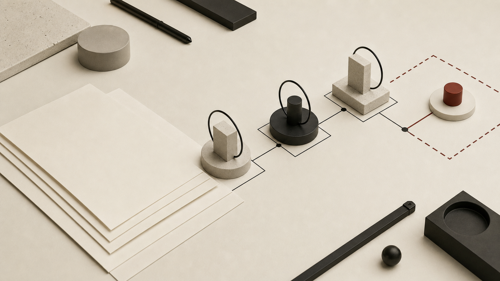

The risky moment in an AI product usually does not look risky. The demo holds together. The model returns a good answer on the first try. Someone in the room says, "ship it," and for a minute that sounds reasonable.
But the demo has only answered the friendly question: can the system produce something impressive on a path we chose? The product owes users a harder answer. What should they do when the output is thin, stale, overconfident, or right only under assumptions they cannot see?
The 2026 AI Index, submitted in April 2026 and last revised on June 29, frames the issue as a gap between rising AI capability and the governance, evaluation, education systems, and data infrastructure around it. For early product teams, that gap first appears in the spec. Not in policy.
The demo answers a question. The product must explain a decision.
A trust gate is a product decision point where the experience changes because the AI answer has become uncertain, risky, or out of bounds. It can ask for more input. It can require human review. It can show source quality, or stop the next step entirely.
Put that in the product spec. If the gate waits for a launch checklist, it shows up after the interface has already taught everyone the wrong standard: did the model respond?
Demos are generous. Real users bring weird inputs, old files, half-formed goals, pressure from a boss, and a strong instinct to trust confident prose.
Trust gates are part of human oversight
A June 2026 study of developers using software agents interviewed 17 experienced developers and found that oversight was not limited to final review. The authors named four forms: a priori control, co-planning, real-time monitoring, and post hoc review. That finding turns "human in the loop" from a slogan into product work.
The paper is about software agents, but the product lesson travels. If an AI system plans work, calls tools, drafts recommendations, or edits user material, the final accept button is too late to carry all the safety burden. The decision points are earlier and messier.
That is product management, not model evaluation. A test set can show how the system behaved under known conditions. It cannot choose which user action needs friction, which output needs a citation, or when the interface should say, plainly, "I do not know enough."
What belongs in the spec
The trust section of an AI product spec should be short enough to survive sprint planning and specific enough for design and engineering to act on. No ceremony. Decisions.
- An input gate that names accepted requests and requests that need clarification or refusal.
- A source gate that decides when users see citations, freshness, missing context, or weak evidence.
- An action gate that separates a harmless draft from anything that can change a file, send a message, spend money, or affect another user.
- A confidence gate that prevents fake precision and states what the interface does when certainty is low.
- A review gate that names who reviews what and when.
- A recovery gate that explains what the user can do when the system is stuck or wrong.
Notice what is missing: a blanket claim that the system is safe. A spec is not a certificate. It is the working agreement between product, design, engineering, and the experience a user actually gets.
A generic example: an AI research assistant
Imagine a startup building an AI research assistant for product teams. The demo summarizes customer interviews, groups themes, and drafts opportunity notes. In the room, it earns trust in five minutes.
The launch spec needs a colder eye. If the source set has only two interviews, the assistant should not sell a theme as a pattern. If a transcript predates the current product direction, the interface should mark it stale or ask whether it belongs. If the assistant cannot find the quote behind a recommendation, it should downgrade the claim instead of dressing it up.
Human review needs an address, too. A founder reading final notes on Friday is doing different work from a researcher approving theme merges during synthesis. A product manager accepting an opportunity brief is different again. Review the source, the cluster, the wording, or the downstream decision. Do not pretend those are the same job.
The product improves when those gates are named early. The team can design empty states, review states, source states, and refusal states as part of the main workflow. Users learn the system's limits from the interface, not from a surprise.
Where product leadership makes the difference
The NIST AI Risk Management Framework is broader than a startup product spec, but its wording is useful here: it is voluntary guidance for putting trustworthiness considerations into the design, development, use, and evaluation of AI products, services, and systems. NIST says its companion AI RMF Playbook maps suggested actions to four functions: Govern, Map, Measure, and Manage.
A startup should not turn its spec into a governance manual. It should translate risk language into interface choices: what feels easy, what slows down, what gets explained, and what the product refuses to do. That translation is senior product work.
This matters most before a company has a real product leadership layer. The founder may see the technical possibility better than anyone else. The team may be moving fast. Without trust gates, though, the default product is the demo path with a launch button attached. I would not ship that.
Write gates while the product is still plastic
The best time to write AI trust gates is before launch, while the workflow can still bend. After launch, every missing gate is harder to add. Users read it as friction. Teams read it as a retreat. The first version has already taught a habit.
Put the gates in the spec early. Name the uncertain moments. Decide what users see, what they can do, and where a person steps in. The point is not universal trust. The point is earned trust, visible in the product before anyone needs it.
Working an AI demo into a real product?
Edgecaser helps founders clarify AI workflow fit, trust boundaries, review points, and product scope before launch pressure hardens the wrong path.
Let's talk about your product decision